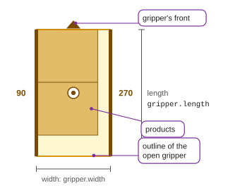
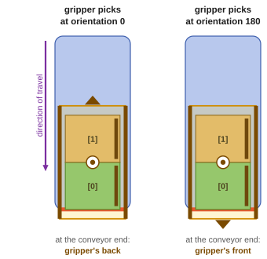
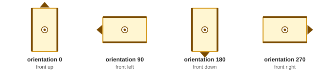

Gripper
OpenPallet 1.2The gripper at orientation 0 stands with its length along X and its front (the triangle) towards the top of the drawing. At the pick its orientation counts in the conveyor's frame, at the place in the pallet's frame.

We recommend taking the gripper's orientation 0 as the gripper most often picks the products from the conveyor. The file gives the outline of the open gripper, whatever its kind: for a jaw gripper, the outline with the jaws fully open. The outline is usually larger than the products picked. The open side (90 or 270, card 4) must be free when placing: on a jaw gripper it is the side of the moving jaw, on a fork gripper the side the forks slide in from.



- Gripper orientation at the pick (
gripper_pick_orientation): 0 or 180, in the conveyor's frame. - Gripper orientation at the place (
gripper_place_orientation): 0, 90, 180 or 270, in the pallet frame. - Products at the pick (
products_at_pick): the products in the order they reach the conveyor end, each with its product number (product_id) and its orientation at the pick (orientation).[0]is the product at the conveyor end, then the next ones from the end. - At orientation 0 the back of the gripper lies at the conveyor end, at orientation 180 its front.
- The allowed gripper orientations at the pick (
gripper.allowed_pick_orientation) and at the place (gripper.allowed_place_orientation) are settings of the station.